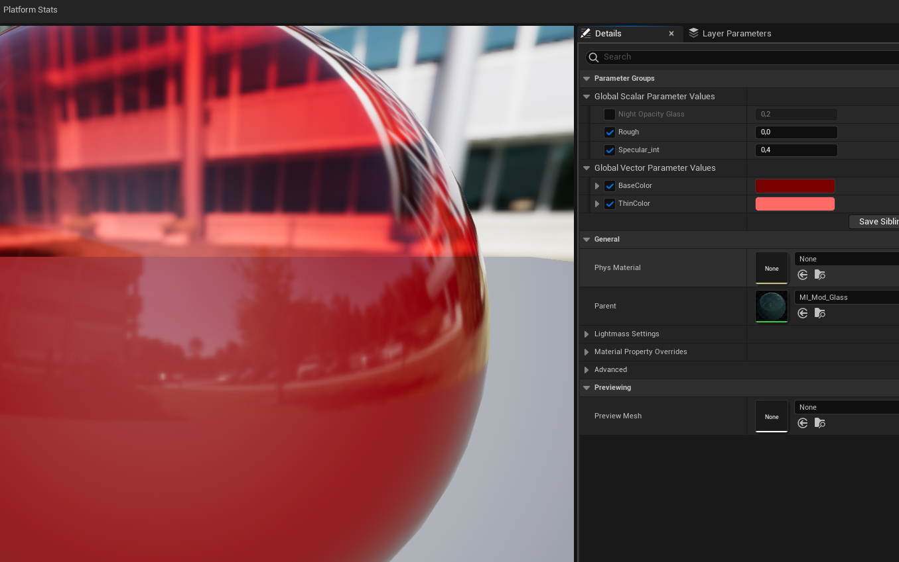
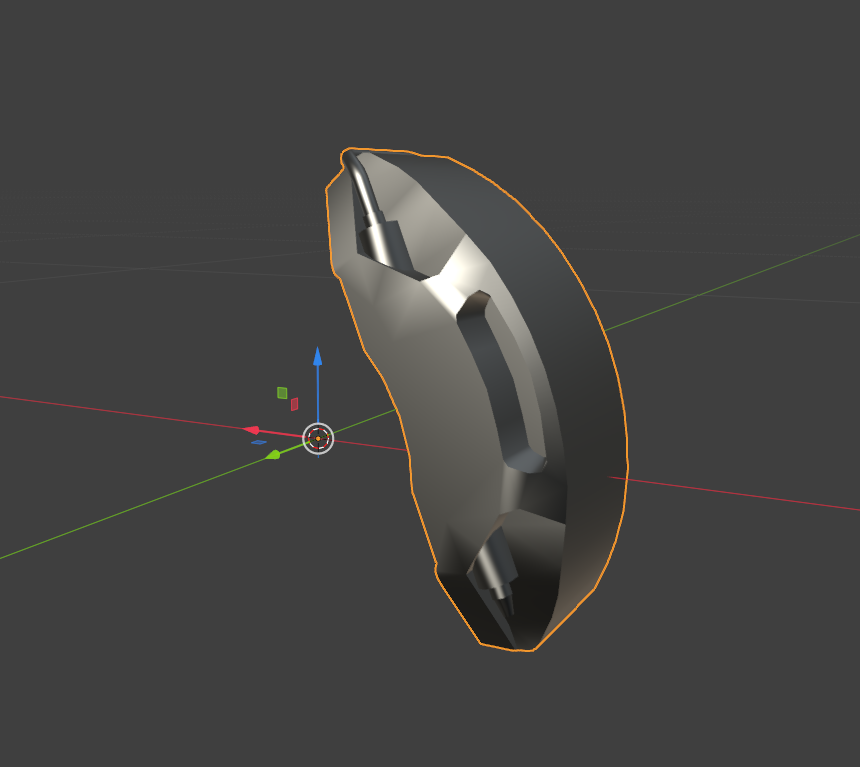
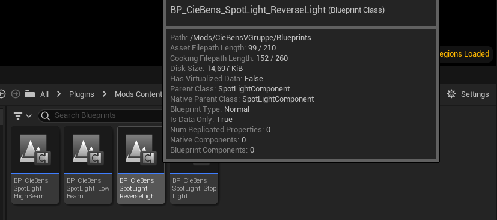
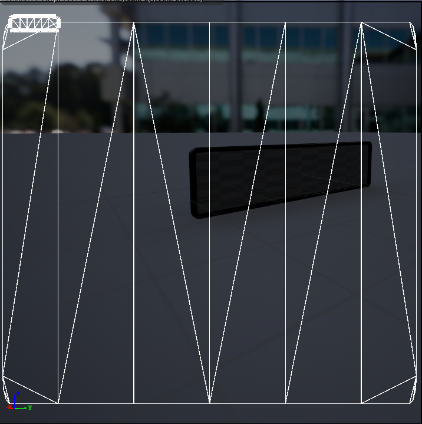
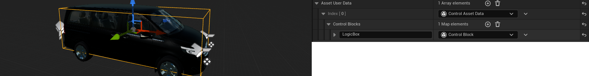

Navigation: README | 01. Minimal Car | 02. Exterior, Lights & World | 03. Interior, Dashboard & Cameras | 04. Mirrors & Wipers | 05. Sounds & FMOD | 06. Specs, Logic & Reference
After completing Module 1, your vehicle already drives. In this module we polish the exterior and connect the car to the game world:
Suspension*);LogicBox), refueling (FuelTank), and cabin rain blocking (RainBlocker).All mod materials are PBR Material Instances inheriting from the parent materials in Content/Common/MasterMaterials/VehicleMaterials/ModMaterials/ and mapped to UV channel 0.
| Map | Purpose | Required UE Texture Settings |
|---|---|---|
| Diffuse (Albedo) | Base color RGB texture. | Virtual Texture Streaming = True |
| Normal | Surface normal map. | Virtual Texture Streaming = True |
| MRA | Channel-packed mask: • R — Metallic • G — Roughness • B — Ambient Occlusion |
Virtual Texture Streaming = TrueCompression Settings = Masks (no sRGB) |
| Emissive | RGB glow map for illuminated elements. | Virtual Texture Streaming = True |
| Livery | RGB livery/decal texture for the body; the Alpha channel masks the livery over the base car paint. | Virtual Texture Streaming = True |
Double-click any Material Instance to inspect its parameters and check the tick box to the left of a parameter to override it. Check Plugins/Mods Content/CieBensVGruppe/Materials/ for working reference setups.
MI_Mod_CarPaintControls the base paint color and finish, and supports a Livery texture with an alpha mask.
MI_Mod_ExteriorUsed for any exterior elements that should not receive the base vehicle paint (plastic trim, grilles, chrome, underbody, wheel rims, calipers).

MI_Mod_TyreDedicated material for rubber wheel tires.
MI_Mod_GlassUsed for transparent or tinted headlight lenses as well as windshields and side/rear windows.

About Glass (Inner / Outer) and Raindrops:
Raindrops on windows are not yet implemented for modded vehicles, so there are currently no strict mesh-splitting rules for glass — simply assign MI_Mod_Glass to your glass meshes.
However, in future updates (when raindrop rendering and wiper clearing are enabled for mods), windows will need to be split into outer and inner meshes (*_Outer and *_Inner), as already demonstrated in CieBensVGruppe/Meshes/.
Suspension*)If your vehicle has visible brake calipers or steering knuckles that should move up/down over bumps and steer with the front wheels without spinning around the wheel axle, use Suspension* nodes.

Y.Generate Missing Collision = False, Do Not Create Material.MI_Mod_Exterior.V_<ModName>Body (recommended parent for clean hierarchy), add 4 StaticMeshComponent nodes with the exact names from the XML schema:
SuspensionFrontLeftSuspensionFrontRightSuspensionBackLeftSuspensionBackRightCollision Presets = NoCollision and uncheck Receives Decals on all four.Location coordinates (in centimeters, at full suspension compression, matching Mount in Vehicle.ini with inverted Y) from the wheel nodes onto the corresponding Suspension* nodes.WheelFrontLeft, WheelFrontRight, WheelBackLeft, WheelBackRight) onto its corresponding Suspension* parent and reset each wheel's Location to (0, 0, 0).
flowchart TD
Body["Body (StaticMeshComponent)"] --> SFL["SuspensionFrontLeft<br/>Location = Mount (cm), NoCollision"]
Body --> SFR["SuspensionFrontRight<br/>Location = Mount (cm), NoCollision"]
Body --> SBL["SuspensionBackLeft<br/>Location = Mount (cm), NoCollision"]
Body --> SBR["SuspensionBackRight<br/>Location = Mount (cm), NoCollision"]
SFL --> WFL["WheelFrontLeft<br/>Location = (0, 0, 0), NoCollision"]
SFR --> WFR["WheelFrontRight<br/>Location = (0, 0, 0), NoCollision"]
SBL --> WBL["WheelBackLeft<br/>Location = (0, 0, 0), NoCollision"]
SBR --> WBR["WheelBackRight<br/>Location = (0, 0, 0), NoCollision"]
Exterior lighting in CCD 2.0 consists of two distinct layers:
SpotLight components on the Actor with ControlBlock Light.MI_Mod_Emissive_Beam)Each lighting function on the body 3D model needs its own Material ID (slot).
MI_Mod_Emissive_Beam. Off-state lamp appearance uses Albedo_texture, and glow color uses Emissive.
Slot Name strictly according to the table below:The game matches the Slot Name inside the Static Mesh, NOT the MI_* filename in the Content Browser!
Required Slot Name |
Lamp Function |
|---|---|
LowBeam |
Low-beam headlights |
HighBeam |
High-beam headlights |
ParkingLights |
Parking / position lights |
FrontFogLights |
Front fog lights |
RearFogLights |
Rear fog lights |
StopLight |
Brake lights |
ReverseLight |
Reverse lights |
LeftTurnLight |
Left turn signals |
RightTurnLight |
Right turn signals |
LicensePlates |
License plate illumination lamps |
BP_ExportSpotLight / SpotLightComponent)In MyFirstCar/Blueprints/, it is convenient to pre-create reusable Blueprint light components:
BP_ExportSpotLight as the parent class (Content/Common/Player/BP_ExportSpotLight).SpotLightComponent is recommended.

LFM_VehicleLightSpot) & IntensityTo project a realistic headlight beam pattern onto the road:
LFM_VehicleLightSpot (Content/Common/MasterMaterials/VehicleMaterials/ModMaterials/Lights/LFM_VehicleLightSpot).Compression Settings = Alpha.LFMI_* to the light component's Light Function Material field.Reference values from CieBensVGruppe:
| Light Type | Intensity Units | Intensity | Attenuation Radius | Inner / Outer Cone Angle | Shadow Bias |
|---|---|---|---|---|---|
Low Beam (LowBeam) |
Candelas |
8000.0 cd |
2500.0 |
0.0 / 36.0 |
0.1 |
High Beam (HighBeam) |
Candelas |
2500.0 cd |
10000.0 |
0.0 / 60.0 |
0.1 |
Reverse (ReverseLight) |
Candelas |
100.0 cd |
400.0 |
0.0 / 60.0 |
— |
Brake (StopLight) |
Candelas |
30.0 cd |
300.0 |
0.0 / 60.0 |
— |

V_<ModName> (under Body or DefaultSceneRoot) and position them at the headlights/taillights.Y (green) pointing down, Z (blue) pointing sideways, and X (red) pointing forward along the beam.
ControlBlock LightOn every light component, add Asset User Data → Control Asset Data:
Control Block name: LightProperties:
PhysicsOutputControl Property String ArrayValues, add one or more float physics output names that drive this light's intensity:
PhysicsOutput Value |
Controlled Lamp |
|---|---|
LowBeamIntensity |
Low beam |
HighBeamIntensity |
High beam |
ParkingLightsIntensity |
Parking lights |
FrontFogLightsIntensity |
Front fog lights |
RearFogLightsIntensity |
Rear fog lights |
StopLightIntensity |
Brake lights |
ReverseLightIntensity |
Reverse lights |
LeftTurnLightIntensity |
Left turn signals |
RightTurnLightIntensity |
Right turn signals |
LicensePlatesIntensity |
License plate lights |
Make sure every active light has a positive electrical resistance (*_Resistance > 0) in [CarElectrics] inside Vehicle.ini — see VehicleLib_MD/04_Components_Electrics.md.
LicensePlates)License plates are generated dynamically by the game:
Slot Name = LicensePlates.MI_Mod_LicensePlate asset in ModMaterials is not used for mods.)0..1 UV square).SM_CieBensVGruppe_LicensePlate from Plugins/Mods Content/CieBensVGruppe/Meshes/ on your front and rear bumpers (with NoCollision).
These 3 components are optional for minimal driving, but essential for full integration with simulator features (gas stations, in-game triggers, rain).
LogicBox)Allows interactive objects, barriers, parking zones, and in-game triggers to detect your vehicle's bounds accurately.
V_<ModName>, add a Box Collision component (+ Add → Box Collision).Location, Rotation, and Box Extent so the box closely wraps your vehicle's exterior dimensions.ControlBlock named LogicBox (no properties needed).
FuelTank)Enables refueling at gas stations.
SceneComponent (+ Add → Scene) attached to a parent with zero transforms relative to root (e.g., directly under DefaultSceneRoot or Body).ControlBlock named FuelTank (no properties needed — its presence alone enables the feature).RainBlocker)Prevents falling rain particles from passing through the roof into the interior:
SM_CieBensVGruppe_RainBlocker). Import with no collision.StaticMeshComponent on the Vehicle Actor (NoCollision, Receives Decals = False).MM_Wireframe (Content/Common/MasterMaterials/System/MM_Wireframe) — it stays invisible in-game.ControlBlock named RainBlocker (no properties needed).

Next step: continue to Module 3. Interior, Dashboard, Cameras & Driver Seating to bring the cockpit and first-person view to life.